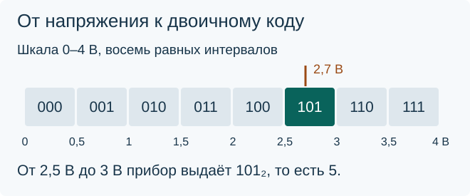

Ввод и вывод: от напряжения до числа
Аналоговый датчик освещённости выдаёт напряжение, которое меняется вместе с освещённостью. Программе для сравнения с порогом нужно число. Посмотрим, где это число появляется, как оно попадает в переменную и что можно узнать по последовательности таких чисел.
Сколько значений различит АЦП?
Аналого-цифровой преобразователь (АЦП) измеряет напряжение и выдаёт целый код. Возьмём простой учебный АЦП с диапазоном от 0 до 4 В и трёхбитным результатом. Из трёх битов можно составить восемь кодов, от 000 до 111. В нашей модели каждому коду соответствует интервал шириной 4 / 8 = 0,5 В. Нижняя граница входит в интервал, верхняя открывает следующий. Верхнему пределу 4 В соответствует последний код.

Найди границу между двумя кодами
Установи 2,7 В, а затем 2,8 В. При трёх битах код останется прежним. Переключись на четыре бита и проверь, стали ли эти напряжения различимы.
При 2,6 В получим 5. При 2,7 В снова получим 5. По сохранённой пятёрке можно назвать интервал исходных напряжений. Чтобы различать более близкие значения при том же диапазоне, потребуется более мелкий шаг. Например, десять битов дают 1024 кода. На точность реального измерения также влияют погрешность прибора, шум и опорное напряжение.
Как число попадает в программу?
В микроконтроллере AVR преобразователь работает как отдельный узел. Библиотека выбирает канал, даёт команду начать преобразование и ждёт готовности. Готовый результат можно прочитать из регистров периферии. Так называют ячейки, через которые процессор обменивается данными и командами с устройством. Например, на ATmega328P десять битов результата считываются частями из двух восьмибитных регистров. Библиотека собирает из них одно число. Реализация analogRead для AVR
// На Arduino с десятибитным АЦП результат лежит в диапазоне 0…1023.
int sample = analogRead(A0);
bool upper_half = sample >= 512;
Первая строка получает один отсчёт со входа A0. Вторая проверяет, попал ли код в верхнюю половину шкалы. Если напряжение изменится через мгновение, в sample останется старое число. Для нового отсчёта надо снова прочитать вход. Встроенный пример Arduino показывает, как вывести считанное значение после пересчёта в вольты. ReadAnalogVoltage
Что пропускается между отсчётами?
Пусть программа читает вход в моменты 0, 10 и 20 мс. Если короткий импульс начался на 3-й мс и закончился на 7-й, во всех трёх отсчётах будет исходный уровень. Разрядность определяет, насколько мелкие изменения по уровню различает АЦП. Интервал между чтениями определяет, насколько часто мы видим сигнал во времени. Именно последовательность сохранённых отсчётов получает алгоритм поиска серий. Как обрабатывать сигнал
Как вывести данные на экран?
Обратный путь тоже начинается с числа. В примере одно число от 0 до 255 задаёт яркость одного пикселя. Считаем строки, столбцы и байты с нуля. Пусть в строке четыре пикселя, каждый занимает один байт, а строки записаны подряд без промежутков. Тогда запись в байт с номером 6 изменит яркость пикселя во второй строке и третьем столбце.
Кадровый буфер хранит значения пикселей кадра. Когда контроллер дисплея считывает буфер для вывода, обновлённый байт задаёт яркость соответствующей точки. На экране с другим форматом пикселей или с дополнительными байтами в конце строки формула адреса меняется. Схема адреса пикселя
← Как устроена память компьютера · Как процессор выполняет команды